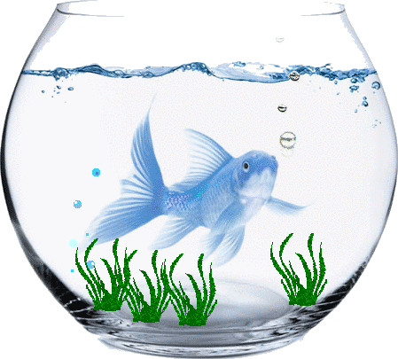

Write the two words below in your vocabulary book along with their short definitions. Also, click on the link for each word, and read more about the definition.
Write a page on the following topic: Imagine a fish popped its head out of the water and said something. What would you do? Write a story about what happened. Be sure to include details in your story.
Write the two words below in your vocabulary book along with their short definitions. Also, click on the link for each word, and read more about the definition.
Comma Review
Write the two words below in your vocabulary book along with their short definitions. Also, click on the link for each word, and read more about the definition.
To make a prairie (1755) by Emily Dickinson
To make a prairie it takes a clover and one bee,
One clover, and a bee.
And revery.
The revery alone will do,
If bees are few.
Write the two words below in your vocabulary book along with their short definitions. Also, click on the link for each word, and read more about the definition.
Remember to pause the videos, and take notes.
Remember to pause the videos, and take notes.
Write the two words below in your vocabulary book along with their short definitions. Also, click on the link for each word, and read more about the definition.
Remember to pause the videos, and take notes.